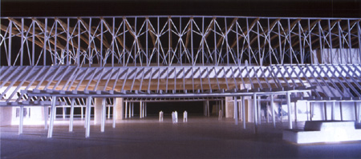

|
 |
| ■建設概要 | |
| 名称／ | JR九州日向市駅（仮称） |
| 所在地／ | 宮崎県日向市 |
| 主要用途／ | 駅舎 |
| 事業主体／ | 宮崎県、日向市、JR九州 |
| 設計／ |
建築：内藤廣建築設計事務所、交建設計 構造：川口衛構造設計事務所 |
| 設計期間／ |
鉄道高架・日向駅舎委員会：1998年～ 基本設計：2001年～ 実施設計：2003年～ |
| 施工期間／ | 2004年～2006年（予定） |
| 開業／ | 2006年（予定） |
| 建築面積／ | 約1,800m2 |
| 延床面積／ | 約3,000m2 |
| 構造／ | S造、木造（集成材） |
| ■ CLOSED |